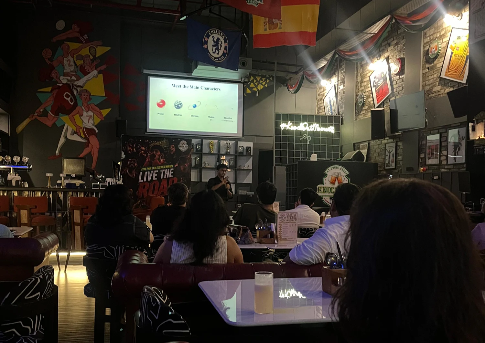
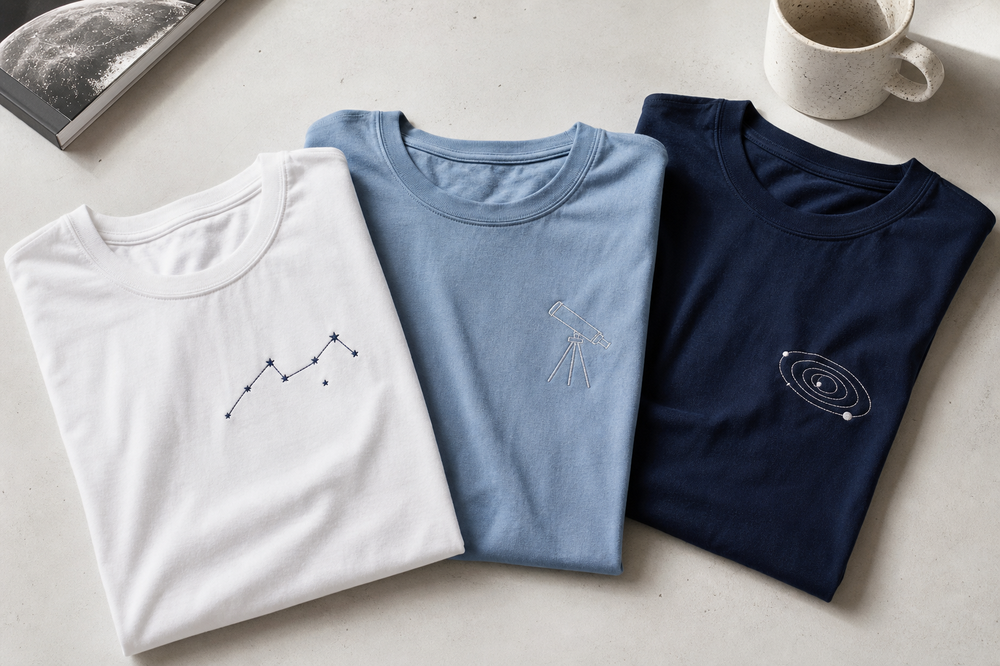

Live talks
Big Bangs, black holes and the beautiful mess of being alive. Built for real people, not just scientists.
Science communication / Est. 2024
Big questions, told in human language. Talks, films and hands-on astronomy for the curious crowd.
Not a lecture.A shared trip from the first atom to the edge of the observable universe, with a few good stories along the way.
01 / The orbit
Pick a question. We will build a memorable route through it, from a crowded bar to a classroom full of future astronomers.
The universe is stranger, warmer and more connected than the textbook lets on. Start anywhere.
02 / The formats
Different rooms need different kinds of magic. Choose your atmosphere.
Big Bangs, black holes and the beautiful mess of being alive. Built for real people, not just scientists.
Visual stories for the internet, the classroom or the big screen. Curious, cinematic and clear.
Hands-on astronomy workshops that turn a room of students into a room of questions.
T-shirts, calendars and small reminders that the universe is still doing something incredible.
03 / In the wild
A bar. A school. A dark sky. The best venue is the one with a little room for a new idea.




04 / Wear the question
Science merch for people who like their clothes with a point of view. Start with the first drop, made for curious humans everywhere.

05 / Open a portal
Tell us what you are imagining. A school visit, a public talk, a film, a workshop or something that has not got a name yet.